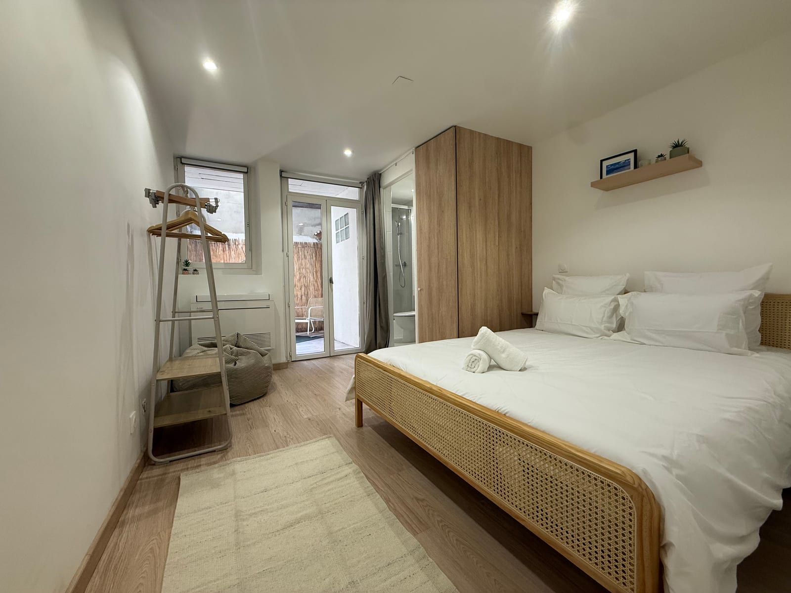

En bref
- Où : 9 rue Claude de Seyssel, hypercentre
- Taille : studio rénové d'environ 25 m²
- Pour : 2 voyageurs, lit queen size
- Prix : dès 54 € la nuit en direct
- Arrivée : autonome dès 16 h
- Départ : avant 10 h
- Animaux : acceptés
- Plus : clim, Wi-Fi fibre, patio privé, cinéma
Où dormir à Aix-les-Bains en plein centre ?
Le studio La Bonne Aventure est situé 9 rue Claude de Seyssel, en plein hypercentre. Commerces, restaurants, gare, thermes et Casino Grand Cercle sont accessibles à pied, et le lac du Bourget est à 5 minutes en voiture.



Quel logement choisir pour une cure thermale ?
Pour une cure, on propose un tarif dégressif dès 20 nuits, ménage inclus. Le studio est calme, avec un vrai lit queen size, une kitchenette équipée pour cuisiner soi-même et la climatisation réversible. Les thermes sont accessibles depuis le centre-ville.
Combien coûte une nuit ?
En réservant en direct sur ce site, les nuits sont à partir de 54 €, sans frais de plateforme. Le ménage est en plus pour les courts séjours. Le tarif semaine (dès 6 nuits) et le tarif cure (dès 20 nuits) l'incluent. La taxe de séjour est en supplément. Le prix exact s'affiche dans le calendrier de réservation.
Peut-on venir avec un chien ?
Oui, les animaux sont acceptés, avec un petit supplément.
Le studio convient-il au télétravail ?
Oui : Wi-Fi fibre, arrivée autonome, et un tarif semaine dès 6 nuits, ménage inclus.
Où se garer ?
Dans les rues voisines (gratuit ou payant selon les zones), ou au parking couvert de la Chaudanne, ouvert 24 h/24, à quelques minutes à pied.
Comment se passent l'arrivée et le départ ?
L'arrivée est autonome à partir de 16 h grâce à une boîte à clés, et le départ se fait avant 10 h. Vous pouvez demander une arrivée anticipée dès 12 h ou un départ tardif jusqu'à 14 h en option.
Que faire à Aix-les-Bains ?
Se balader au bord du lac du Bourget, visiter l'abbaye d'Hautecombe, profiter des thermes et des spas, passer au Casino Grand Cercle, et monter à la neige au Revard ou à La Féclaz, à environ 30 minutes.
Pourquoi réserver en direct plutôt que sur Airbnb ?
Sur le site, il n'y a pas de frais de plateforme, le paiement est sécurisé par Stripe avec confirmation immédiate, et chaque nuit en direct compte pour une réduction fidélité sur un prochain séjour. Vous préférez Airbnb ? L'annonce est ici.